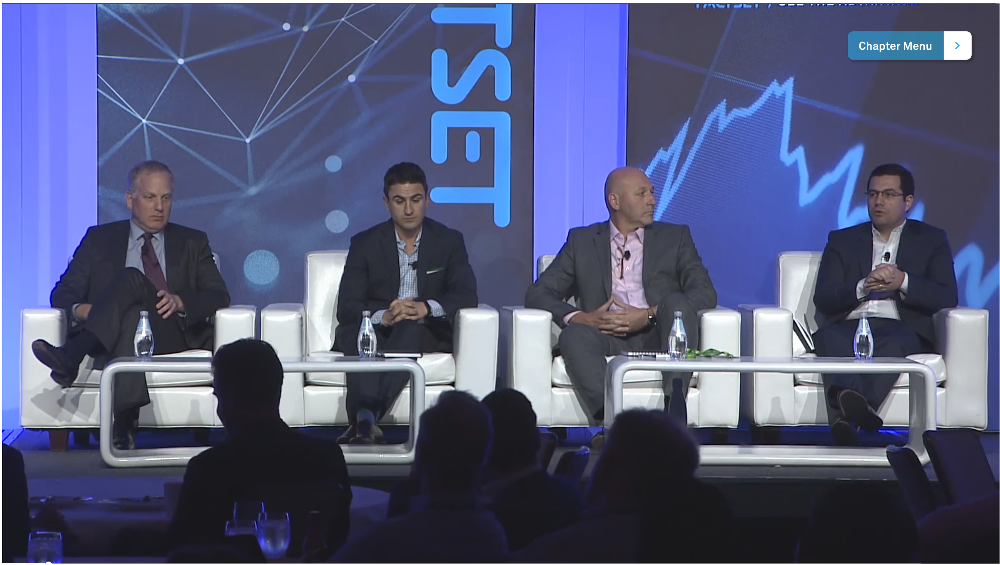

{% include head.html %} {% include header.html %}
{{ content }}
Selected Interviews and Talks
FactSet Investment Process Symposium - Innovative Data Panel

BattleFin Alternative Data - Interview
Beryl Elites - The Disruptors in Investment Management
Latest Articles
View All
{% include footer.html %}